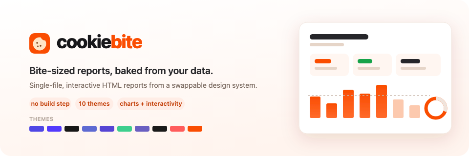
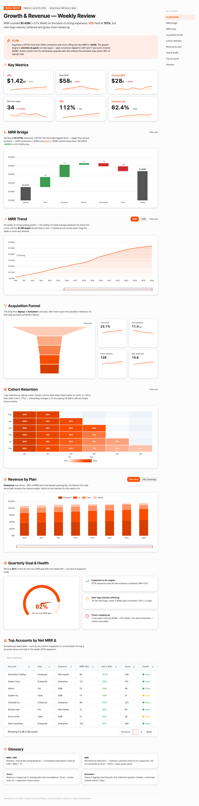
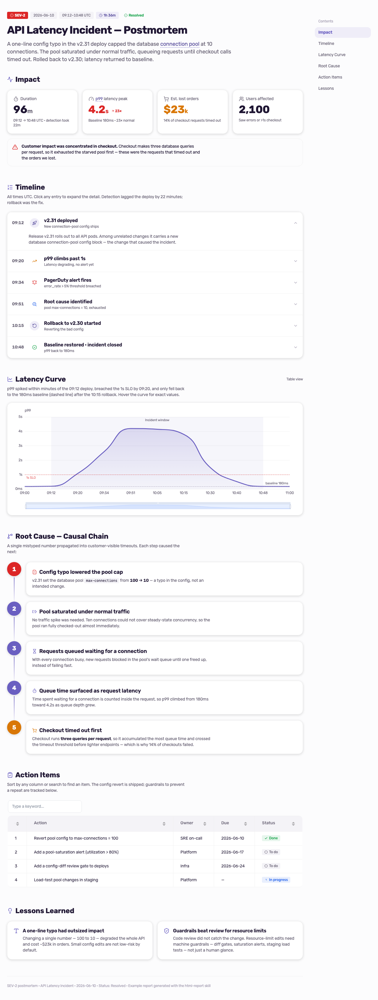
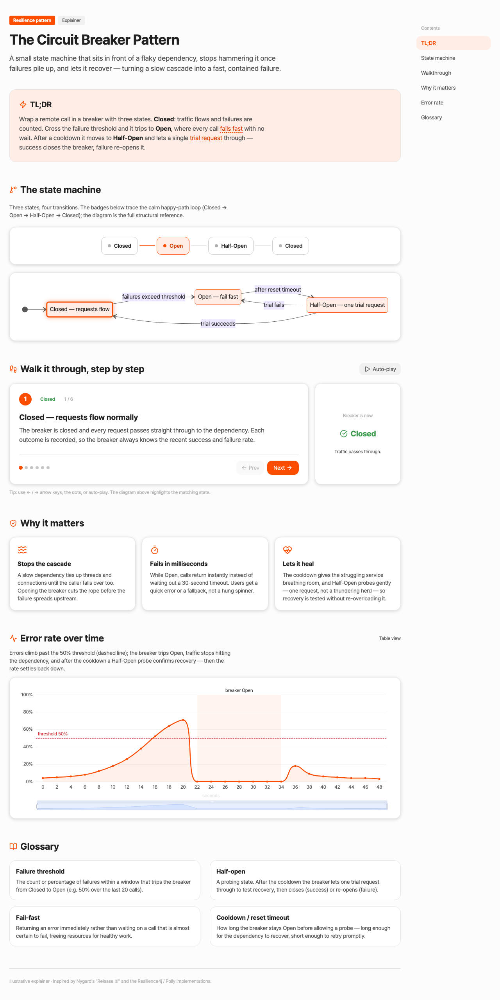

Live, interactive reports built with the cookiebite skill. Open one — zoom a chart, click through a walkthrough, sort a table. Every one is a single self-contained HTML file.

Weekly growth dashboard
MRR waterfall, signup funnel, cohort retention heatmap, goal gauge, sortable accounts table.

Incident postmortem
Impact cards, an expandable timeline, a zoomable latency curve, a numbered root-cause chain.

Circuit-breaker explainer
A Mermaid state diagram, a click-through walkthrough, glossary tooltips.
Built with cookiebite · MIT